knots <- cbind(
x = c( 0.1, 1.0, 1.7, 2.5, 2.8, 2.4, 2.2, 3.2, 4.0, 5.2 ),
y = c( 1.0, 1.2, 1.7, 1.9, 1.5, 1.1, 0.2, 0.6, 1.1, 1.2 ) )
plot( knots, type="b", asp=1 )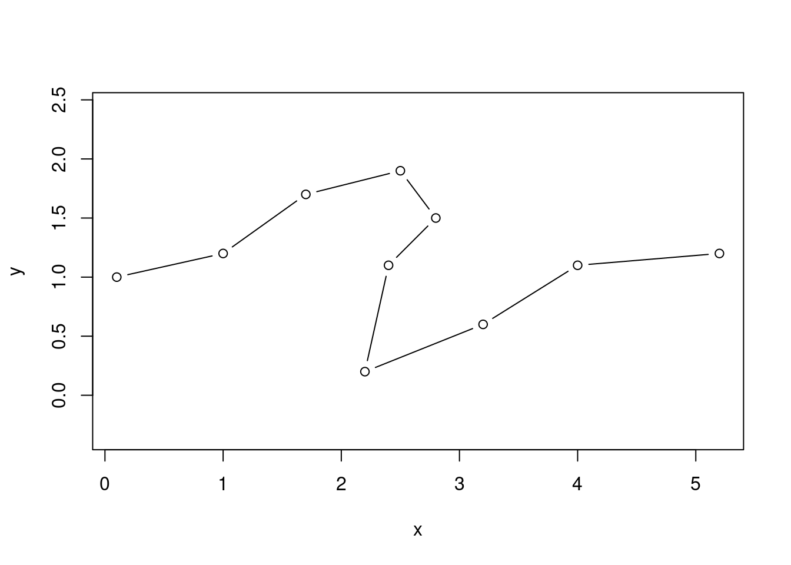
Often, objects in feature space form point clouds that are elongated in one direction, which, however, is typically not shaped. Think of a long, curved, banana, or a pool noodle bent into a complex shape: draw random points from its volume and you have an example for such a point cloud.
Our aim is to find a curve that describes the “center line” through such a point cloud.
In practice, the problem usually arises with high-dimensional data, but to discuss approaches to solve it, it might be better to use example data that lives in a 2D space, as this is easy to visualize.
The following code uses splines to construct a curve that will serve as example.
We first set a number of control points:
knots <- cbind(
x = c( 0.1, 1.0, 1.7, 2.5, 2.8, 2.4, 2.2, 3.2, 4.0, 5.2 ),
y = c( 1.0, 1.2, 1.7, 1.9, 1.5, 1.1, 0.2, 0.6, 1.1, 1.2 ) )
plot( knots, type="b", asp=1 )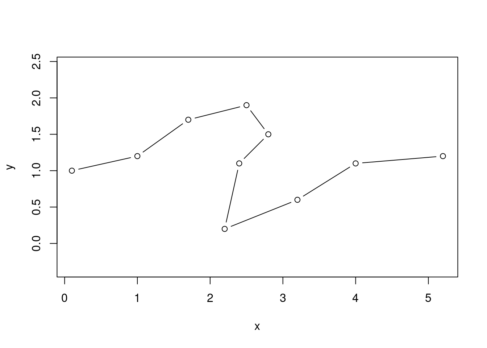
Next, we use these points as guides to get a smooth (continuous and differentiable) curve:
spline_basis <- splines::bs( seq( 0, 1, l=1000), df=nrow(knots), intercept=TRUE )
plot( knots, asp=1 )
lines( spline_basis %*% knots, col="blue" )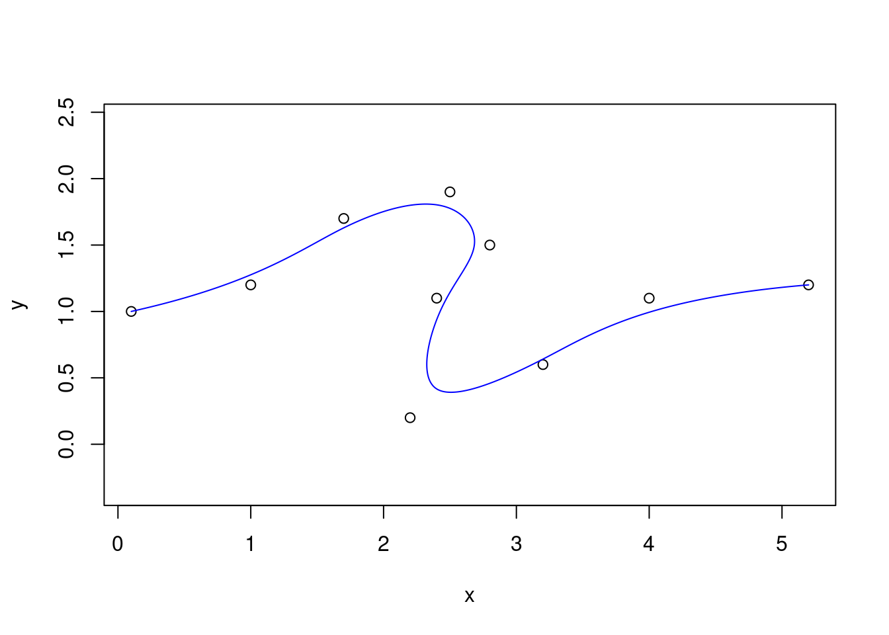
We will skip over an explanation how the bs function is used in this example to construct x and y coordinates, as out goal is just to get some non-trivial curve.
Now we select random points along this curve (sampling the curve uniformly), and add some Gaussian noise to the 2D coordinates.
set.seed( 13245768 )
t <- runif( 1000 )
x <- splines::bs( t, df=nrow(knots), intercept=TRUE ) %*% knots +
matrix( rnorm( 2000, 0 , .1), ncol=2 )This will be our data. We will use it instead of our usual PCA scores. Here’s a plot of the data, with the original curve as dahsed line.
plot( x, col="gray", asp=1 )
lines( spline_basis %*% knots, col="blue", lty="dashed" )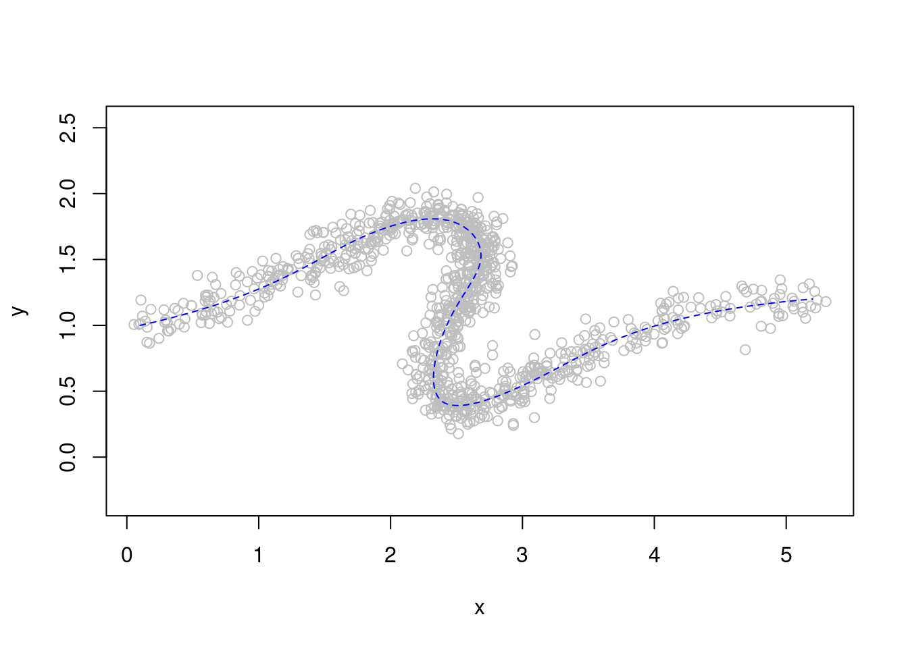
Can we reconstruct the curve from the data? Let’s try, using the “princurve” package, which implements the method we will discuss below:
prc <- princurve::principal_curve( x )Here’s the curve that we got (in brown):
plot( x, col="gray", asp=1 )
lines( prc$s[ prc$ord, ], col="brown" )
lines( spline_basis %*% knots, col="blue", lty="dashed" )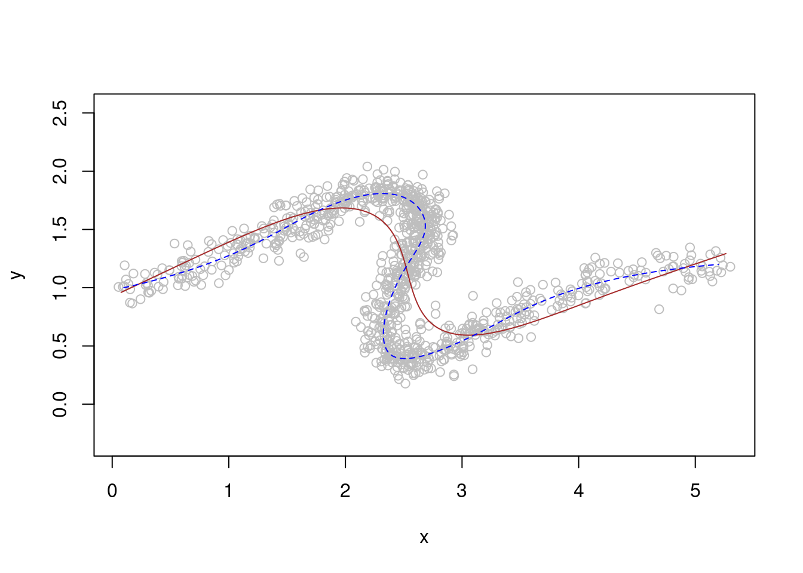
The principal curve algorithm tries to find a curve \(\mathbf{f}:[0,1]\rightarrow\mathbb{R}^n\)
By default, princurve uses spline regression (as provided by the R basis function stats::smooth.spline). (Again, we unfortunately don’t have the time to discuss spline regression.)
To get a better result than what we just saw, we should increase the number of degrees of freedom (i.e., number of knots) for the spline smoother:
prc <- princurve::principal_curve( x, df=10 )
plot( x, col="gray", asp=1 )
lines( prc$s[ prc$ord, ], col="brown" )
lines( spline_basis %*% knots, col="blue", lty="dashed" )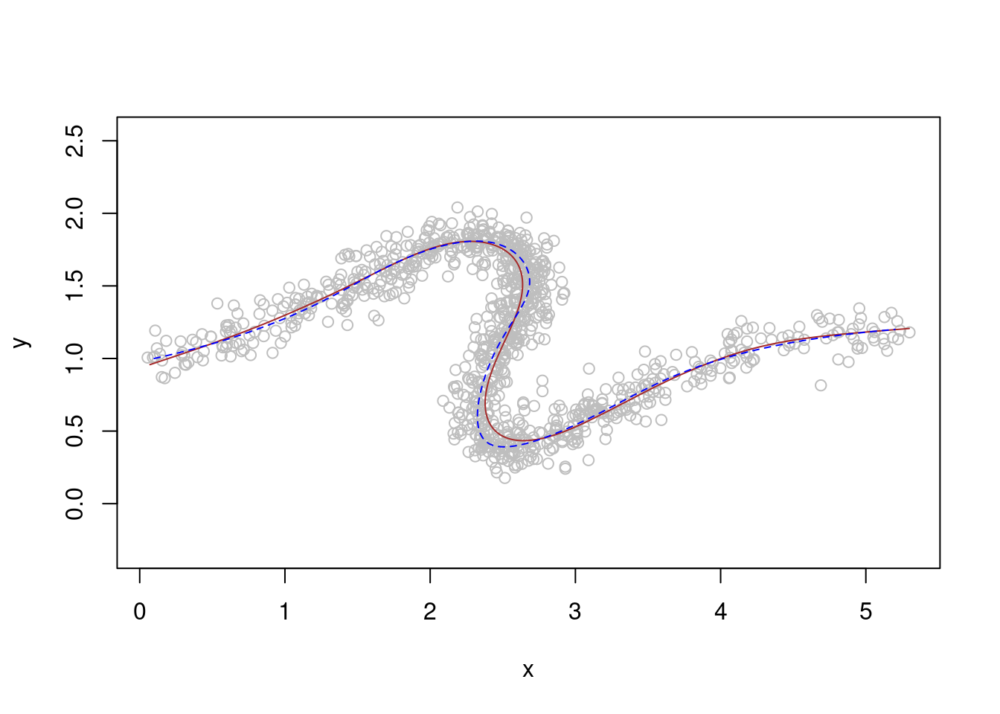
Now, let’s try to reimplement this by hand to understand what princurve does.
We first need an initial guess for an assignment of points to pseudotime values.
To this end, we perform a PCA on the data
pca <- prcomp( x )Here’s the direction of the first PC:
plot( x, col="gray", asp=1 )
abline( a = 1.5, b = pca$rotation["y","PC1"] / pca$rotation["x","PC1"] )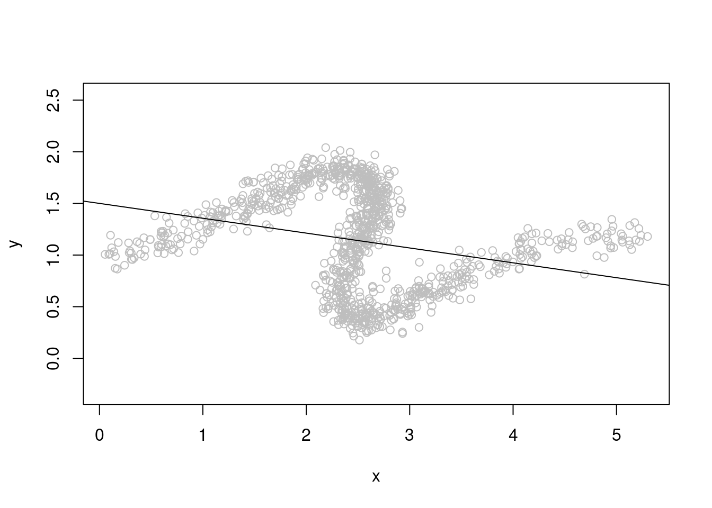
# abline draws a line with intercept a (here chosen arbitrarily ) and
# slope b (here taken from principal component 1)The scores along PC1 are the orthogonal projections of the data points onto thie line. This will be our initial guess for the pseudotime, i.e., serve as a first rough ordering of the data points:
pt <- pca$x[,"PC1"]scale_colors <- function(t)
rje::cubeHelix(130,r=4)[ ceiling( ( t - min(t) ) / ( max(t) - min(t) ) * 99 ) + 1 ]
plot( x, col=scale_colors(pt), asp=1, cex=.5 )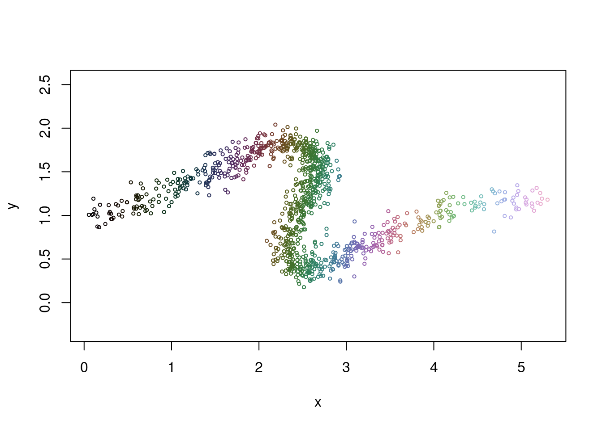
Now, consider each coordinate dimension \(i\) of the data separately, and perform a smoothing spline regression of the \(i\)-th component of the data vectors onto the pseudotime:
fits <- lapply( 1:2, function(i) smooth.spline( pt, x[,i], df=10 ) )Here’s a plot of the fits:
for( i in 1:2 ) {
plot( pt, x[,i], asp=1, cex=.2, main=i )
lines( fits[[i]], col="red" )
}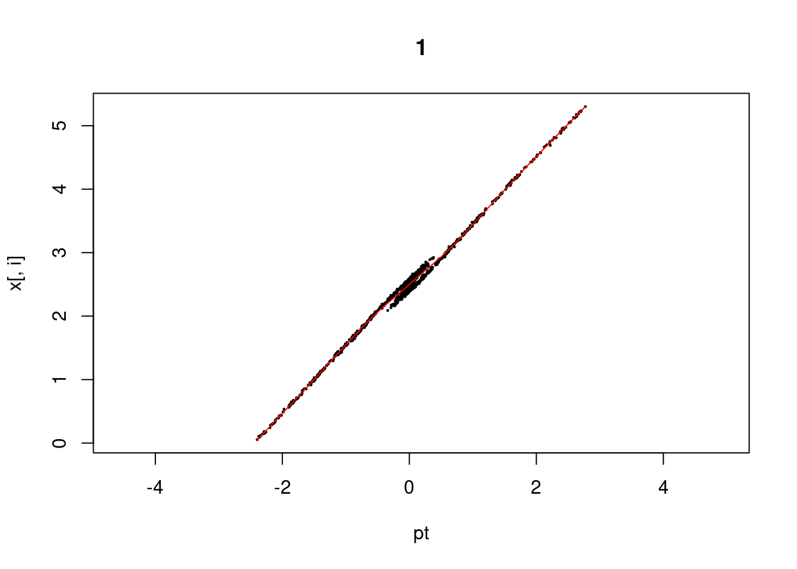
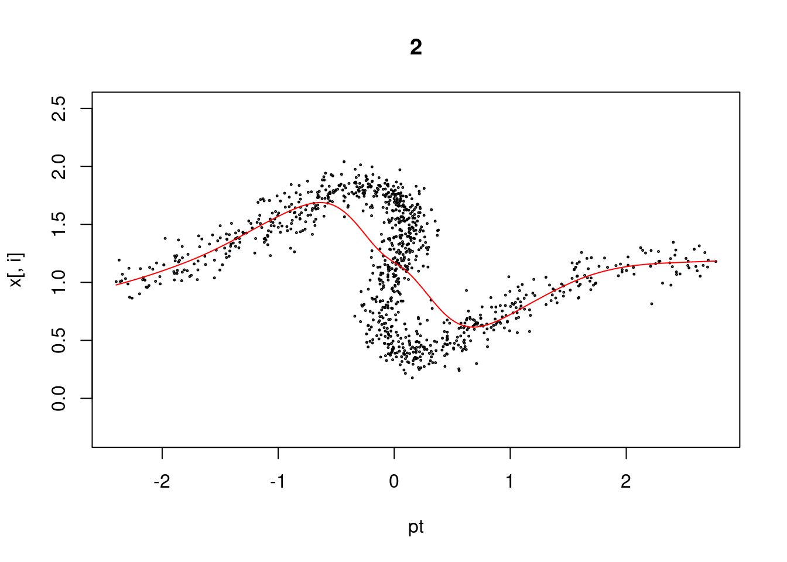
We construct a fine grid of equispace pseudotime values, that extends a bit outwards the interval covered by our current pseudotime values:
tg <- seq(
from = min(pt) - .3 * ( max(pt) - min(pt) ),
to = max(pt) + .3 * ( max(pt) - min(pt) ),
length.out = 10000 )Now, we calculate the curve points at these pseudotime points
curve <- sapply( fits, function(fit)
predict( fit, tg )$y )
head(curve) [,1] [,2]
[1,] -1.578154 0.5461749
[2,] -1.577285 0.5464051
[3,] -1.576416 0.5466354
[4,] -1.575548 0.5468657
[5,] -1.574679 0.5470960
[6,] -1.573810 0.5473263Here’s
plot( x, col="gray", asp=1, cex=.5 )
lines( curve, col="red" )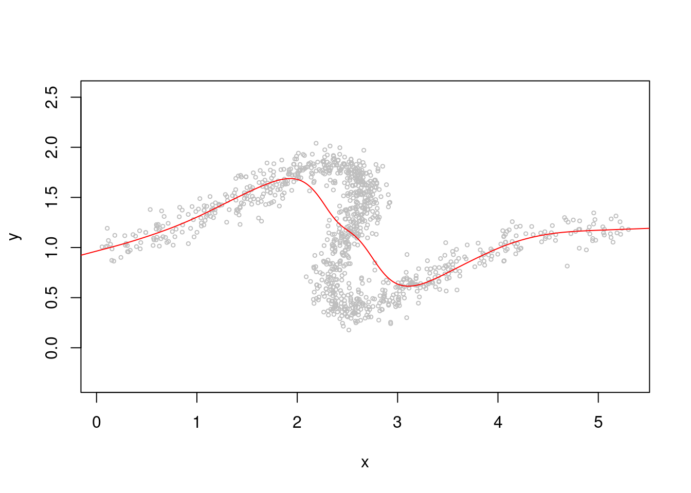
Now, we project each data point onto the curve, i.e., we find the curve point closest to the data point.
We use the fast nearest neighbors (FNN) package for this. Its function get.knnx takes two matrices, denoted “data” and “query” and considers the rows of these matrices as data points. Then, it searches for each query point its nearest neighbors among the data points.
nn <- FNN::get.knnx( data=curve, query=x, k=1 )
str(nn)List of 2
$ nn.index: int [1:1000, 1] 4235 3473 3464 4794 4058 3316 5389 5706 2973 5287 ...
$ nn.dist : num [1:1000, 1] 0.3878 0.1768 0.0412 0.2738 0.1139 ...Now, each data point has an index into our 3000 curve points that shows us where it is projected to.
To find pseudotime, we need to find out how away far the data point’s projection image is along the curve. Hence, we calculate the distance from each curve point to the next:
curve_segment_lengths <- sqrt(
rowSums( ( curve[ 2:nrow(curve), ] - curve[ 1:(nrow(curve)-1), ] )^2 ) )
head( curve_segment_lengths )[1] 0.0008986183 0.0008986183 0.0008986183 0.0008986183 0.0008986183
[6] 0.0008986183The cumulative sum of this vector gives us the distance of erach curve point to the start of the curve, measured along the curve:
distance_from_start <- c( 0, cumsum(curve_segment_lengths) )
head( distance_from_start )[1] 0.0000000000 0.0008986183 0.0017972366 0.0026958549 0.0035944733
[6] 0.0044930916Now, we can assign a pseudotime to each data point
pt <- distance_from_start[ nn$nn.index ]Here is now the result of this first iteration, with our fitted curve in red, the true curve in blue, and the data points coloured by pseudotime:
plot( x, col=scale_colors(pt), asp=1, cex=.5 )
lines( curve, col="red" )
lines( spline_basis %*% knots, col="blue", lty="dashed" )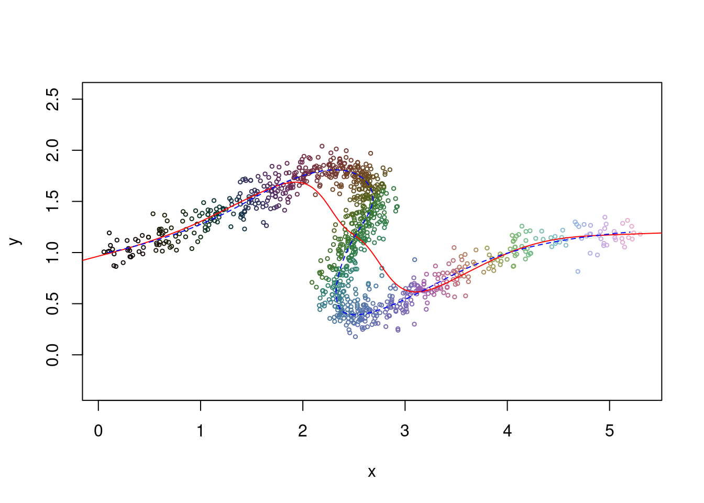
We rerun the two steps to get the next iteration
### Regression step:
# Spline smoothing of individual coordinates
fits <- lapply( 1:2, function(i) smooth.spline( pt, x[,i], df=10 ) )
for( i in 1:2 ) {
plot( pt, x[,i], asp=1, cex=.2, main=i )
lines( fits[[i]], col="red" )
}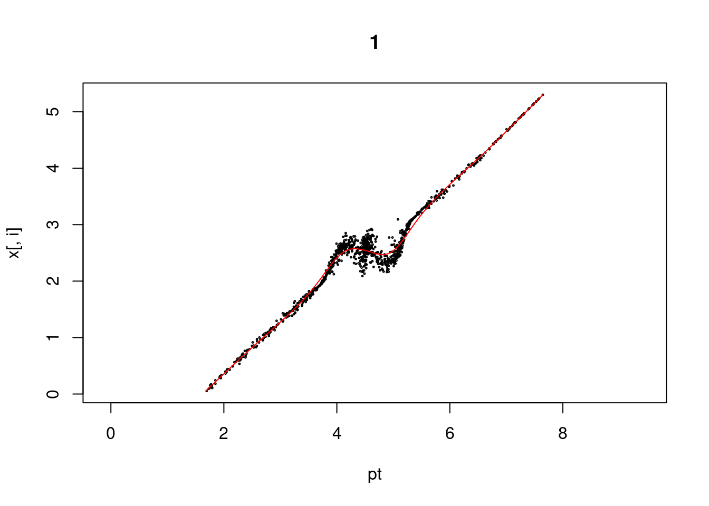
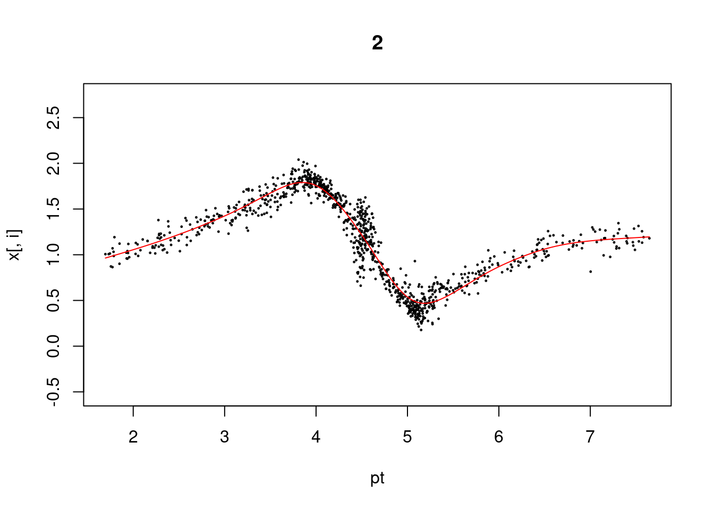
# Calculate curve along fine grid
tg <- seq(
from = min(pt) - .3 * ( max(pt) - min(pt) ),
to = max(pt) + .3 * ( max(pt) - min(pt) ),
length.out = 10000 )
curve <- sapply( fits, function(fit)
predict( fit, tg )$y )
### Projection step
# Project data points onto curve with nearest-neighbor search:
nn <- FNN::get.knnx( data=curve, query=x, k=1 )
# Calculate distances along curve
curve_segment_lengths <- sqrt(
rowSums( ( curve[ 2:nrow(curve), ] - curve[ 1:(nrow(curve)-1), ] )^2 ) )
distance_from_start <- c( 0, cumsum(curve_segment_lengths) )
# Assign pseudotime
pt <- distance_from_start[ nn$nn.index ]
# New plot
plot( x, col=scale_colors(pt), asp=1, cex=.5 )
lines( curve, col="red" )
lines( spline_basis %*% knots, col="blue", lty="dashed" )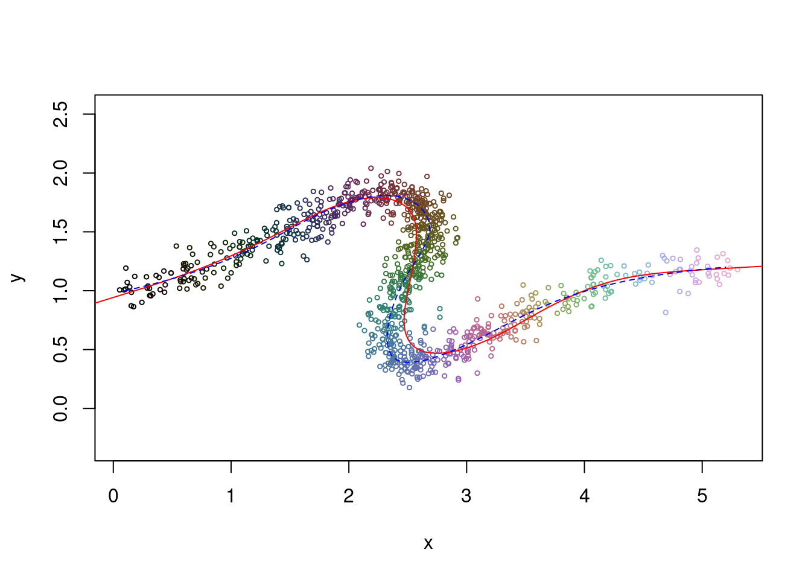
principal_curve_iteration <- function( x, pt=NULL, curve=NULL ) {
if( is.null(pt) ) {
# initialization step
pt <- prcomp(x)$x[,"PC1"]
}
# Spline smoothing of individual coordinates
fits <- lapply( 1:ncol(x), function(i) smooth.spline( pt, x[,i], df=10 ) )
# Calculate curve along fine grid
tg <- seq(
from = min(pt) - .3 * ( max(pt) - min(pt) ),
to = max(pt) + .3 * ( max(pt) - min(pt) ),
length.out = 10*nrow(x) )
curve <- sapply( fits, function(fit)
predict( fit, tg )$y )
# Project data points onto curve with nearest-neighbor search:
nn <- FNN::get.knnx( data=curve, query=x, k=1 )
# Calculate distances along curve
curve_segment_lengths <- sqrt(
rowSums( ( curve[ 2:nrow(curve), ] - curve[ 1:(nrow(curve)-1), ] )^2 ) )
distance_from_start <- c( 0, cumsum(curve_segment_lengths) )
# Assign pseudotime
pt <- distance_from_start[ nn$nn.index ]
list( pt=pt, curve=curve )
}l = list( pt=NULL, curve=NULL )
for( iter in 1:6 ) {
l <- principal_curve_iteration( x, l$pt, l$curve )
plot( x, col=scale_colors(l$pt), asp=1, cex=.5, main=sprintf( "Iteration %d", iter ) )
lines( l$curve, col="red" )
lines( spline_basis %*% knots, col="blue", lty="dashed" )
}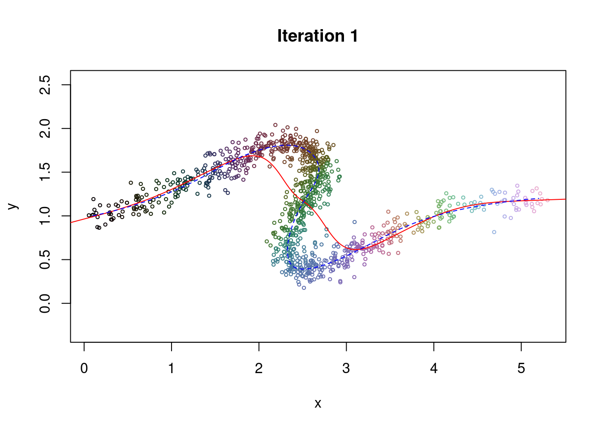
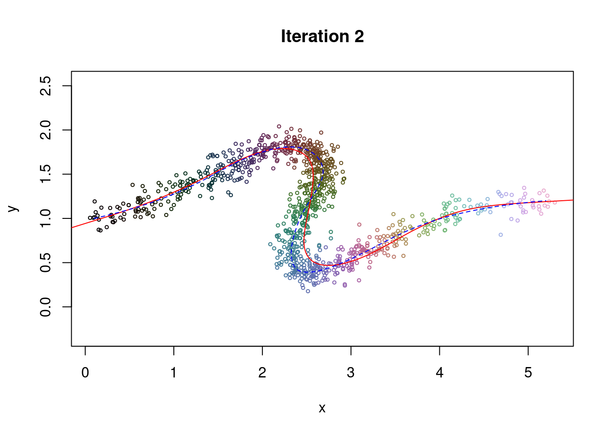
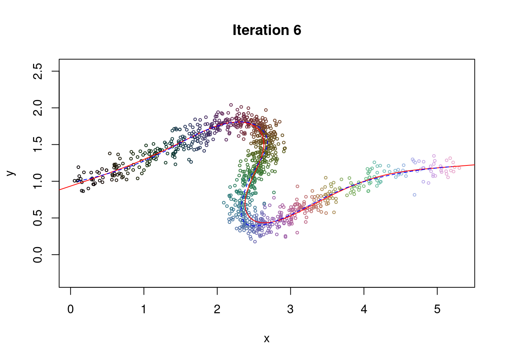
Our projection step is wasteful, as we need to calculate a very fine grid in order to make sure that we don’t get discretization errors. If we stick to the idea of representing the curve as a chain of linear segments, it should be sufficient to only use as much segments that the angle between two adjacent segments does not deviate too much from straight. Instead of projecting only on segment boundaries, we should also consider projecting at inner points of segments.
Can you come up with an approach to do so?
On the other hand: Is this worthwhile, given that computers are fast?
In the regression steps, we can replace the spline regression with any other smoothing method. The princurve package, for example, gives the option to use both spline regression and local (LOESS) regression.